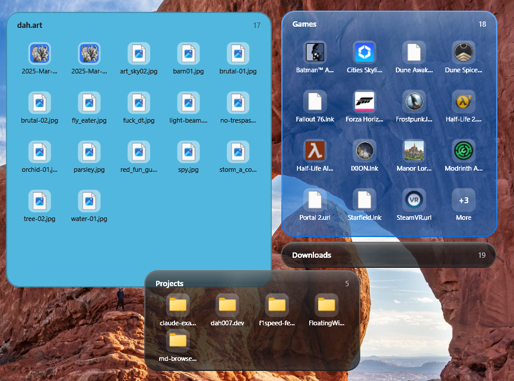
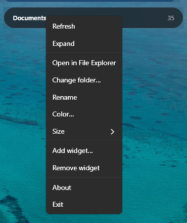
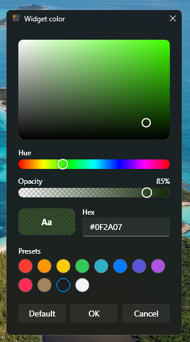

Your favorite folders, floating on your desktop.
Pin any folder as a frosted-glass widget. Glance, click, open. No digging through File Explorer.
Free and open source. Installs for your user only, no admin prompt.

A folder that stays where you put it.
Each widget mirrors a real folder with real icons and thumbnails. Drag it anywhere; it remembers.
Live folder view
Real shell icons and image previews, in four sizes from 2×2 up to 5×5. Overflow becomes a +N tile that opens the folder.
Part of the desktop
Above the wallpaper, below your apps. Widgets survive Win+D and stay out of the taskbar and Alt+Tab.
Matches Windows
Glass that follows your light or dark theme, live, with a real blur of what's behind it.
Remembers everything
Folder, position, size, name and color come back on the next launch. Drag to move; it saves when you let go.
Make each one yours.
Rename it, tint it, collapse it. Text flips between black and white so it stays readable on any color and any wallpaper.
- Tint the glass any color, with a full picker, opacity slider and hex entry
- Optional glossy highlights, per widget
- Collapse a widget down to its title with a double-click
- Everything lives in the right-click menu


Open source, and growing.
GlassLedge is Apache 2.0 licensed and built in the open. Read it, fork it, send a pull request.
Modern .NET
WPF on .NET 10, with a tested core library and CI on every push.
Plugins In development
Widgets beyond folders: a search box, a clock, weather. A plugin supplies the body and the app supplies the glass. The design is on GitHub.
Install in a minute.
Windows 11 (22H2 or later), 64-bit. The .NET runtime is bundled.
- Download the latest
Setup.exefrom the Releases page. - Run it. It installs for your user only, and you can choose to start with Windows.
- Pick a folder for your first widget, then drag it where you want it.
Heads up: the installer isn't code-signed yet, so Windows SmartScreen may warn you the first time. Choose More info, then Run anyway. The full source is on GitHub if you'd like to check or build it yourself.